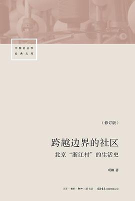

《跨越边界的社区（修订版）》

总体观点
1980年代起，数万温州农民自发涌入北京南郊大红门一带，在没有任何国家计划投资、没有城市户口与体制庇护的灰色地带，赤手空拳建立起一个产值数十亿的庞大服装产销帝国——“浙江村”。项飙以人类学长达六年的浸入式观察，记录了这一当代中国最波澜壮阔的自发生态奇迹。
全书的核心理论贡献在于提出了“关系丛”概念：浙江村人不是靠抽象冷冰的法律或科层制行政来维系运转，而是将同乡、亲友等传统血缘地缘关系，巧妙改造为支撑商业信用、代销分包、跨区域联运和合伙投资的现代化经济网络。这种“在开放下聚合”的强黏性网络，展现了底层民间社会的非凡创造力。
浙江村的存在彻底改写了传统意义上的国家与社会关系。它不仅打破了城乡二元壁垒与行政管辖的地理边界，更在历经政府数十次严厉整肃与强拆之后展现出野草般的顽强韧性。这本社会学经典为理解当代中国流动人口、体制外经济生长与社会自我组织能力提供了不可替代的底色。
核心观点
-
1. “关系丛”是民间自发生长、跨越制度壁垒的核心信任机制
市场经济在法治不健全的转型期没有走向丛林互害，靠的是将血缘、地缘与商业利益紧密交织的“关系丛”网络，以连带声誉为履约担保。
一个刚从温州走出来的年轻人没有任何资产抵押，但只要同村老乡引荐，大批发商就敢赊给他价值几十万元的面料，靠的是家族声誉连带责任。 -
2. 发明“代销”模式：用无本生意撬动全中国庞大商业网络
浙江村商人打破了传统“一手交钱一手交货”的壁垒，发明了下家先拿货去全国各地卖、卖出后再结账付钱的代销链条，成倍放大了资金杠杆与流通效率。
皮夹克热潮期间，浙江村的作坊每天将成箱皮衣托运发往哈尔滨、内蒙古乃至俄罗斯莫斯科，半年后再统一结算回笼资金，迅速占领全国市场。 -
3. “大院”是产供销一体的非正式自治单元与微型社会生态
温州人租下北京当地农民的宅基地，联合集资搭建起封闭式大院，院内兼具制衣车间、家庭生活、仓储物流与自发安保巡逻，形成自给自足的避风港。
刘家大院等大型院落里住着上千人，不仅有上百个家庭制衣缝纫间，还自发催生出温州风味快餐摊、理发店、长途电话吧和私人幼儿园。 -
4. 民间社会与行政体制之间存在复杂的“共生、借用与博弈”策略
浙江村并非与政府对抗，而是通过借用体制外壳（挂靠国营单位执照、联营办厂、赞助当地联防）在制度夹缝中为自己争取合法的生存经营空间。
为了在大商场摆摊不被工商查封，温州商人通过向濒临破产的国营商场支付昂贵管理费“引厂进店”，借用国营单位的招牌合法公开经营。 -
5. 物理空间的暴力拆除，无法消灭具有深厚社会有机联系的流动网络
1995年北京组织大规模联合强拆联合行动，大院被夷为平地；但短短几个月后，依靠全国性产销网络与同乡黏性，浙江村在大红门周边迅速卷土重来、更加繁荣。
推土机推倒大院后，制衣户分散租住在周边村落继续踩缝纫机接单，随后在短短三年内投资建起合法的大型现代化京温服装批发大厦。 -
6. 跨越边界的新社会空间：重新思考中国社会现代化的基层主体性
现代性不是只有自上而下的国家规划与科层化管理一种路径；底层农民工在流动中创造的新型社会空间证明，民众本身具备自我组织与现代化的强大能力。
没有任何官员和经济学家规划，浙江村仅凭数万普通裁缝和货车司机的日常互动，就自发造就了辐射全国乃至东欧的百亿级轻工产业集群。
全书结构
-
第一至二章 引论与走进“浙江村”
交代项飙以北大本科生身份骑自行车扎进南苑大红门的田野缘起；阐明从普通人日常行为出发、解构现代与传统对立的社会学方法论。
项飙学会温州乐清方言，脱下书生外套长年泡在制衣作坊里，用平视与同理心赢得温州商人和北京本地房东的彻底信任。 -
第三章 周家一日：微观生活史
以周姓一户典型温州裁缝家庭24小时的真实轨迹为切片，生动呈现其住房布局、高强度流水线劳作、客商往来与资本周转细节。
逼仄的十几平米平房里摆着四台缝纫机，夫妻俩从清晨干到深夜，中间接待三拨前来送布料、要货款和介绍小工的同乡访客。 -
第四至五章 1984—1988：来到北京与站稳脚跟
回顾温州人第一代“哥伦布”摆地摊打游击的初创史，以及发明“代销”、借用国营执照“引厂进店”登堂入室站稳脚跟的惊险跳跃。
早期温州小贩推着三轮车在前门大街偷卖衣服，遇到联防队查抄就拔腿就跑，依靠极低的售价和敏锐的潮流款式迅速打开销路。 -
第六章 1988—1992：爆发式扩张与全国网络形成
详述“皮夹克热”与中苏边境贸易带来的财富神话，分析布料、辅料、劳务与民间资金四大专业市场的自发分工与全国网络打通。
苏联解体后东欧轻工业短缺，几百名俄罗斯倒爷直接提着成捆美元坐火车杀进浙江村批发皮衣，催生出跨国物流托运专线。 -
第七至八章 1992—1995：乱里挣钱与大拆迁波折
描绘大型“大院”集资热潮、黑恶帮派与自卫联防组织的出现，复盘1995年政府联合大拆迁风暴的前因后果及随后野火烧不尽的回潮复苏。
大拆迁令下达后数万人拖家带口撤退到河北三河或隐入地下，拆迁风头一过，由于北京市民对平价服装的刚需，各路摊主迅速原址回归。 -
第九至十章 理论探讨：关系丛与跨越边界的新社会空间
升华全书核心社会学理论：解析“大小相配”社区格局、“亲友锁客户”的关系丛机理，反思户籍壁垒下中国非正规社会空间的未来演进。
温州大老板投资大商场必须依赖无数小制衣户撑起人气，小制衣户依靠大商场提供遮风挡雨的合法展台，形成紧密共生的大中小网络。